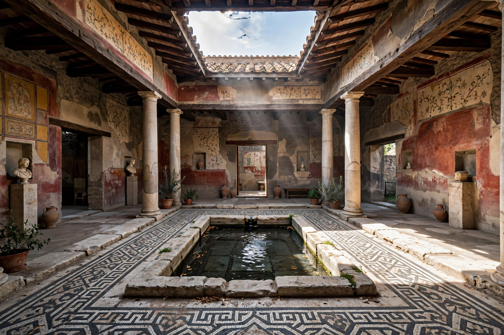

Atrium (architecture)
| Atrium | |
|---|---|
| Type | Architectural space |
| Origins | Ancient Roman domestic architecture |
| Features | Central open court; compluvium (roof opening); impluvium (rain basin) |

In architecture, an atrium (plural: atria or atriums) is a large open-air or skylight-covered space surrounded by a building. Atria were a common feature in Ancient Roman dwellings, providing light and ventilation to the interior. Modern atria, developed in the late 19th and 20th centuries, are often several stories high, with a glazed roof or large windows, and are a key feature in many large public and commercial buildings.
Ancient Roman atrium
The atrium was the central reception hall of a Roman domus, around which the other rooms were arranged. Rain entered through the compluvium, an opening in the sloped roof, and collected in the shallow impluvium basin set into the floor, from which it drained into a cistern. Here the head of the household received clients at the morning salutatio, and the family's ancestral images (imagines) were displayed. Vitruvius described several types, including the Tuscan, tetrastyle and Corinthian atrium.
Modern atria
Revived by 19th-century iron-and-glass construction, the modern atrium became a signature element of hotels, shopping centres, office towers and museums: the Hyatt Regency Atlanta (1967), designed by John Portman, is often credited with popularising the dramatic multi-storey hotel atrium. Because they connect many floors and can conduct smoke in a fire, atria require careful fire engineering, including smoke extraction and sprinklers.